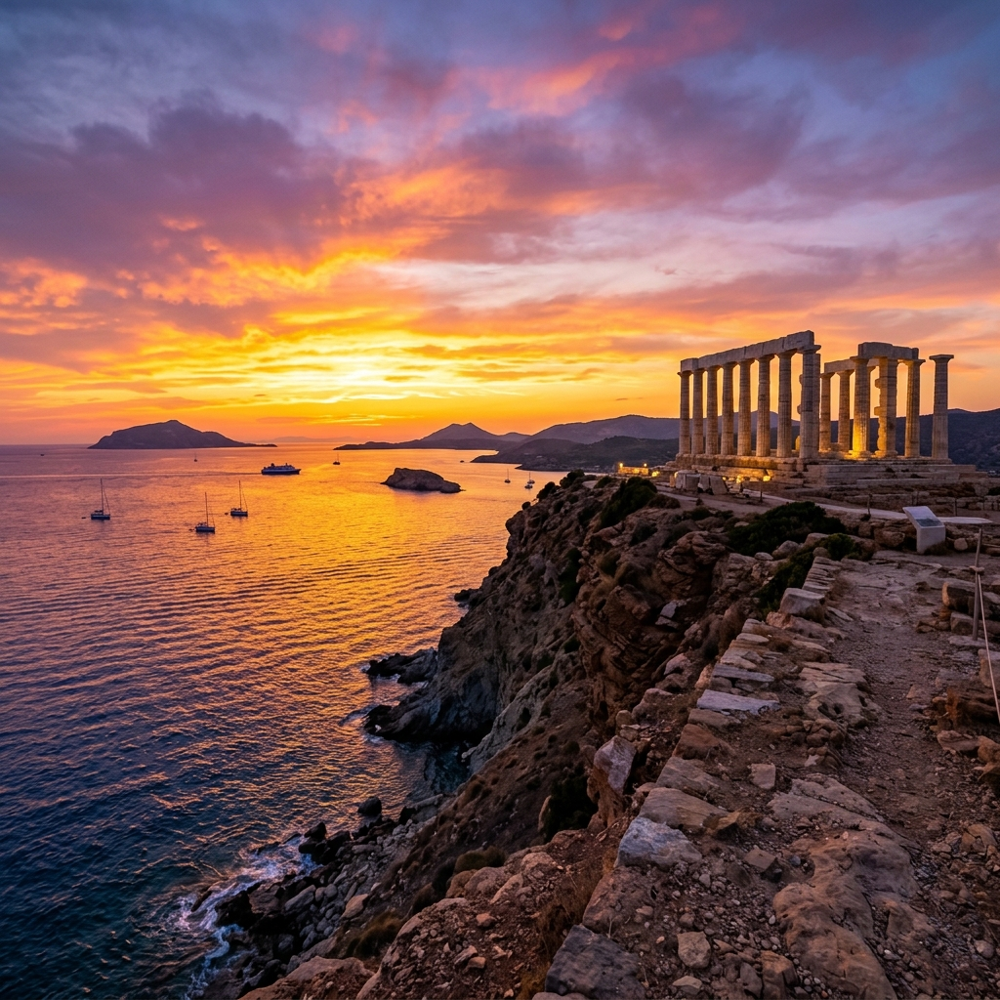
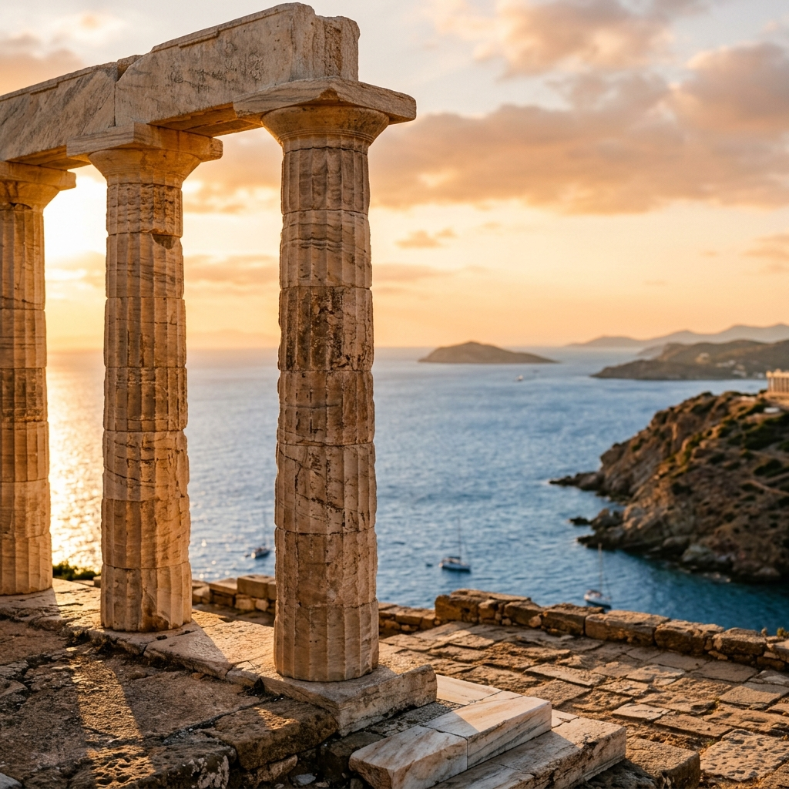

Taxi & Van Transfers
A magical drive along the Athenian Riviera leading to one of the most stunning sunsets in Greece.
Escape the bustling city of Athens and embark on a scenic drive along the mesmerizing and beautiful Athenian Riviera. Our destination is Cape Sounio, the southernmost tip of the Attica peninsula, famous for its majestic Temple of Poseidon.
Built in the 5th century BC to honor the God of the Sea, the temple stands proudly on a rocky hill overlooking the Aegean Sea. Not only will you discover fascinating history, but you will also experience what many consider to be the most breathtaking sunset in all of Greece.
Lake Vouliagmeni & Riviera
Epic view from the Temple
Your private driver will pick you up directly from your hotel/apartment in a luxurious, climate-controlled vehicle. We usually recommend starting a few hours before sunset.
We'll drive along the beautiful coastal road, passing through upscale Athenian suburbs like Glyfada, Vouliagmeni, and Varkiza, enjoying uninterrupted views of the Saronic Gulf.
A quick stop at the natural spa lake of Vouliagmeni, famous for its warm therapeutic waters and impressive rock formations.
Arrive at Cape Sounio. You will have plenty of time to explore the ancient ruins, take stunning photos, and watch the sun dip below the Aegean horizon.
After the sunset, we can head back to Athens or, if you prefer, stop at a traditional Greek tavern by the sea for fresh seafood before returning.

